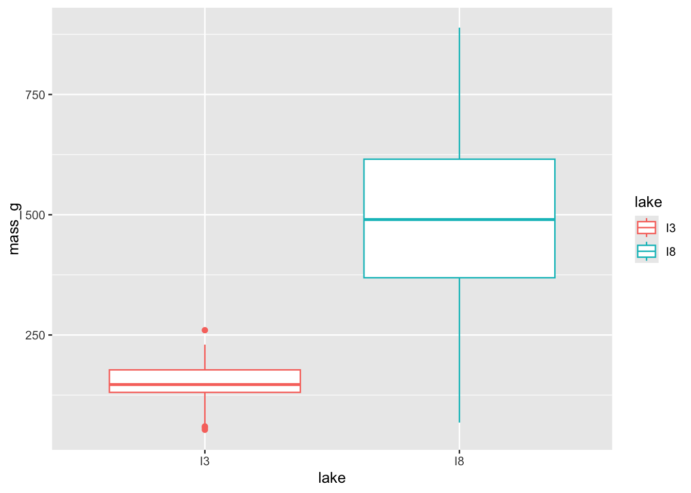
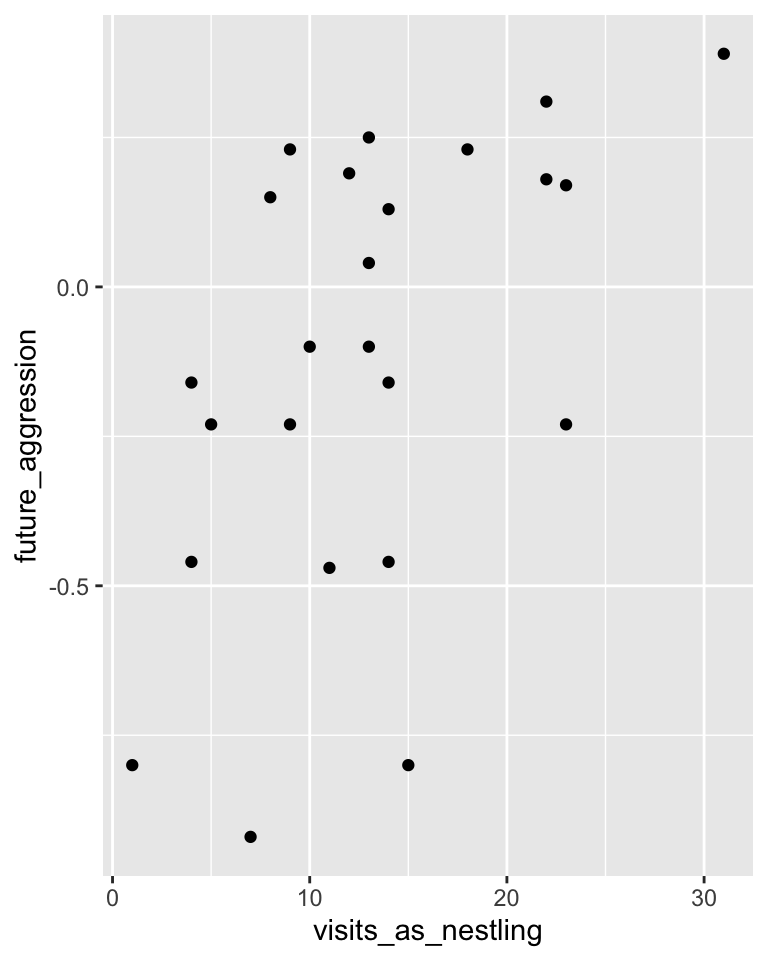
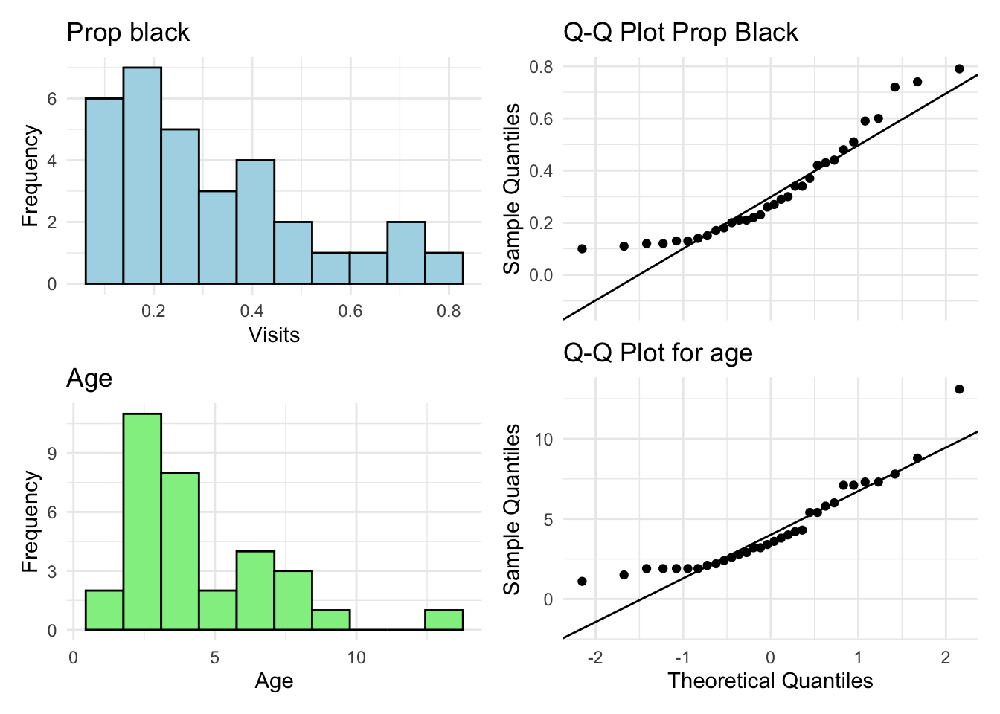
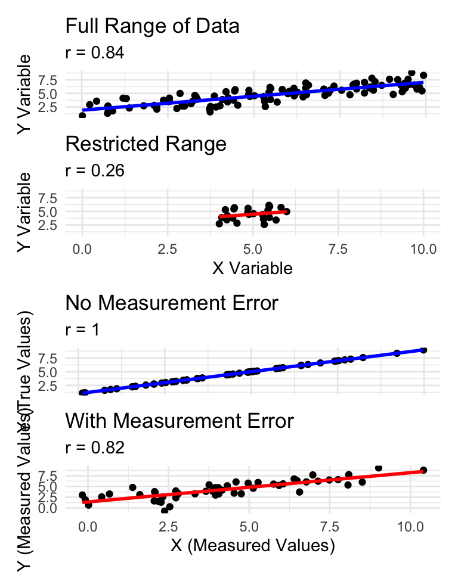
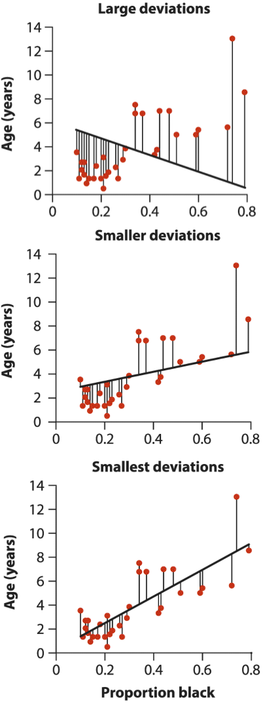
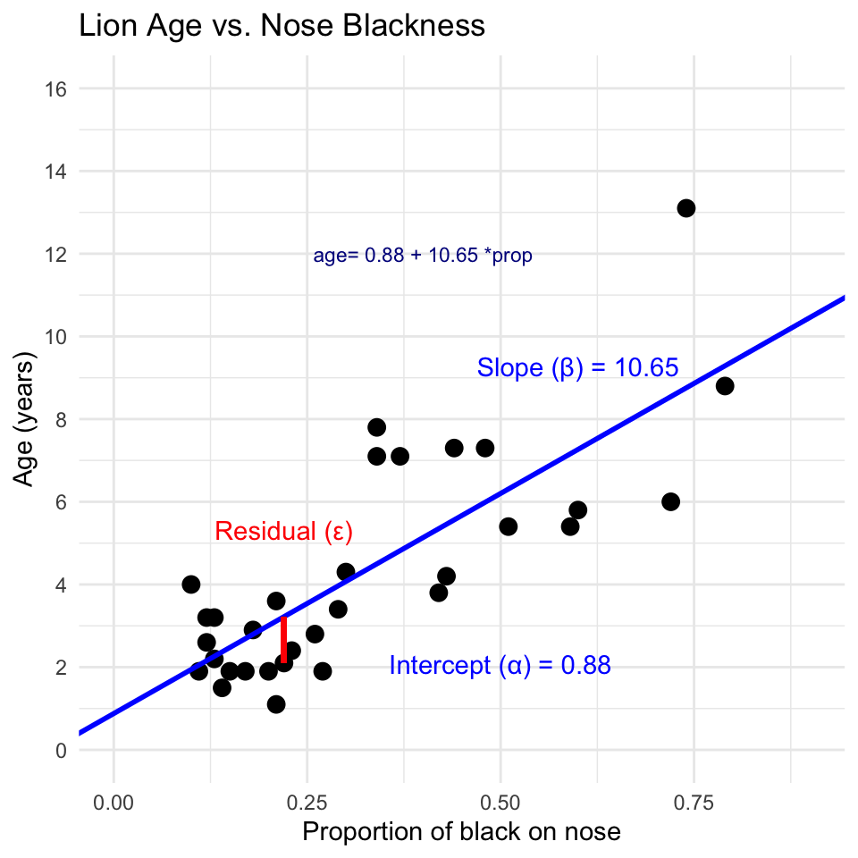
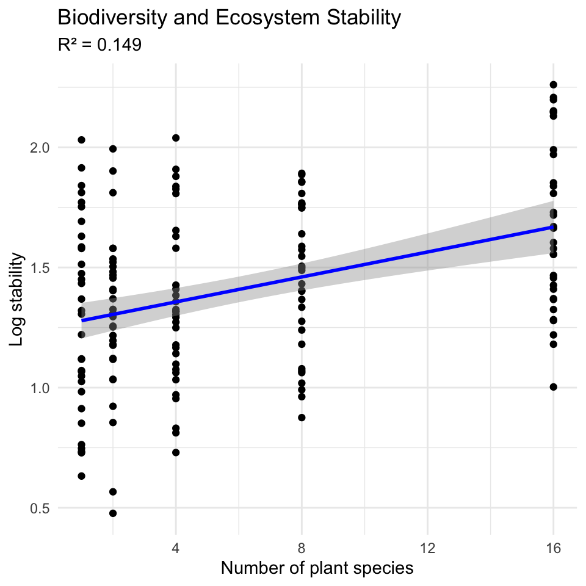
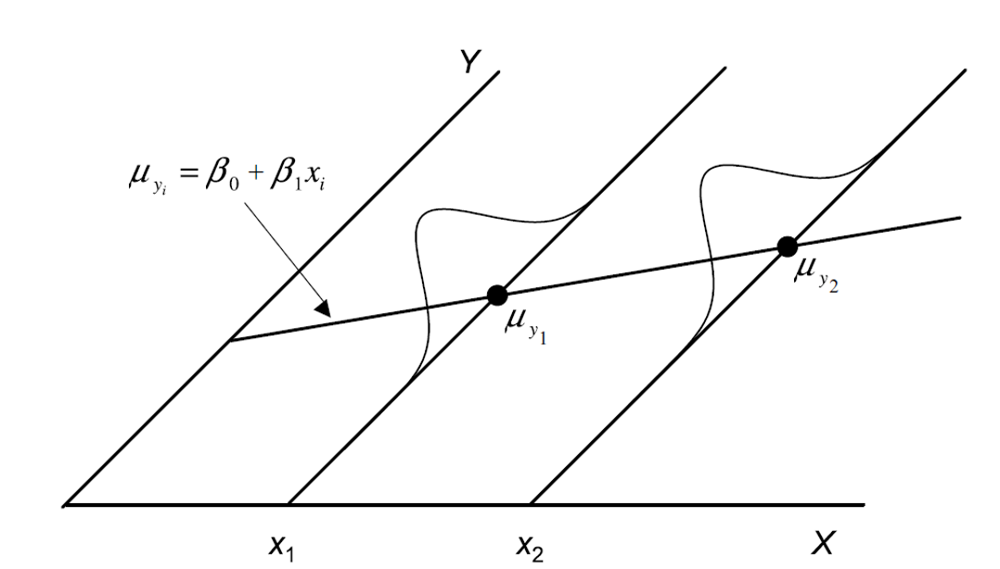
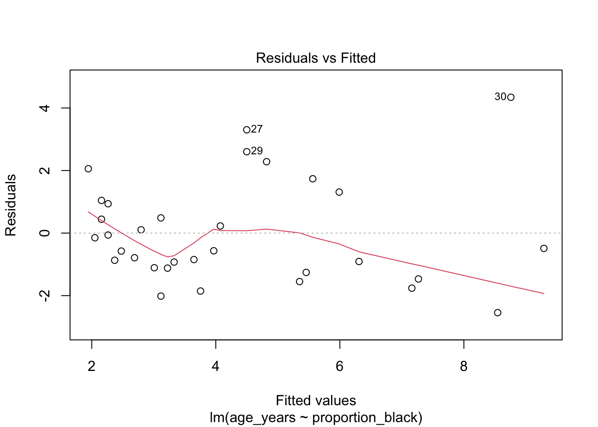
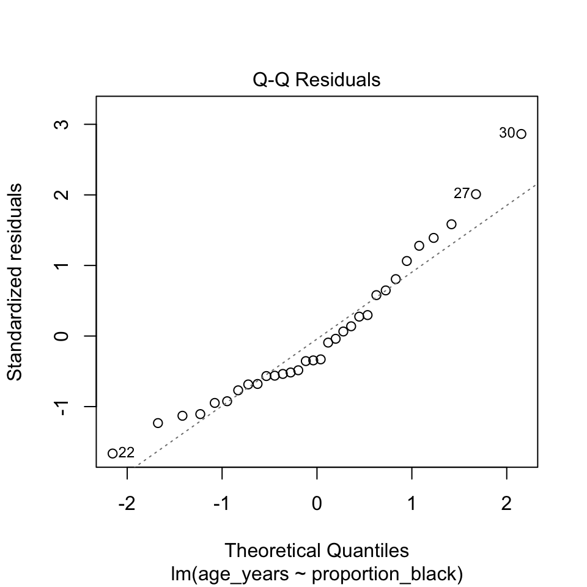

Lecture 09 Correlation and Regression
Lecture 8: Review
Covered
- Study design
- Causality in ecology
- Experimental design:
- Replication, controls, randomization, independence
- Sampling in field studies
- Power analysis: a priori and post hoc
- Study design and analysis
Lecture 9: Overview
The objectives:
This lecture covers two fundamental statistical techniques in biology: correlation and regression analysis. Based on Chapters 16-17 from Whitlock & Schluter’s The Analysis of Biological Data (3rd edition), we’ll explore:
- Correlation analysis: measuring relationships between variables
- The distinction between correlation and regression
- Simple linear regression: predicting one variable from another
- Estimating and interpreting regression parameters
- Testing assumptions and handling violations
- Analysis of variance in regression
- Model selection and comparison
Lecture 9: Correlation vs. Regression:
What’s the Difference?
Correlation Analysis:
- Measures the strength and direction of a relationship between two numerical variables
- Both X and Y are random variables (both measured, neither manipulated)
- Variables are typically on equal footing (either could be X or Y)
- No cause-effect relationship implied
- Quantifies the degree to which variables are related
- Expressed as a correlation coefficient (r) from -1 to +1
Regression Analysis:
- Predicts one variable (Y) from another (X)
- X is often fixed or controlled (manipulated)
- Y is the response variable of interest
- Often implies a cause-effect relationship
- Produces an equation for prediction with slope and intercept parameters

Lecture 9: Correlation Analysis
What Is Correlation?
Correlation analysis measures the strength and direction of a relationship between two numerical variables:
- Ranges from -1 to +1
- +1 indicates perfect positive correlation
- 0 indicates no correlation
- -1 indicates perfect negative correlation
The Pearson correlation coefficient (r) is defined as:
\[r = \frac{\sum_{i}(X_i - \bar{X})(Y_i - \bar{Y})}{\sqrt{\sum_{i}(X_i - \bar{X})^2 \sum_{i}(Y_i - \bar{Y})^2}}\]
This can be simplified as:
\[r = \frac{\text{Covariance}(X, Y)}{s_X \cdot s_Y}\]
Where \(s_X\) and \(s_Y\) are the standard deviations of X and Y.

Lecture 9: Correlation Analysis
Example 16.1: Flipping the Bird
Nazca boobies (Sula granti) - Do aggressive behaviors as a chick predict future aggressive behavior as an adult?
- correlation is r = 0.534 - moderate positive relationship
- p-value = 0.007 correlation is statistically significant.
For a Pearson correlation coefficient (r) of 0.53372:
- This is r (not rho as Spearman nonparametric below), as indicated by “cor” in your output
- To determine the amount of variation explained, you square this value: r² = 0.53372² = 0.2849 (or approximately 28.49%)
- means about 28.49% of the variance in one variable can be explained by the other variable
Note that it is tested by a t test: \(\text{t}=\frac{r}{SE_r}\)
Pearson's product-moment correlation
data: booby_data$visits_as_nestling and booby_data$future_aggression
t = 2.9603, df = 22, p-value = 0.007229
alternative hypothesis: true correlation is not equal to 0
95 percent confidence interval:
0.1660840 0.7710999
sample estimates:
cor
0.5337225 Lecture 9: Correlation Analysis
Example 16.1: Flipping the Bird
Interpretation: The correlation coefficient of r = 0.534 suggests that Nazca boobies who experienced more visits from non-parent adults as nestlings tend to display more aggressive behavior as adults. This supports the hypothesis that early experiences influence adult behavior patterns in this species.
Standard Error:
\(\text{SE}_r = \sqrt{\frac{1-r^2}{n-2}}\)
SE = 0.180
Need to be sure relationship is not curved - note below

Lecture 9: Correlation Analysis
Testing Assumptions for Correlation
As described in Section 16.3, correlation analysis has key assumptions:
- Random sampling: Observations should be a random sample from the population
- Bivariate normality: Both variables follow a normal distribution, and their joint distribution is bivariate normal
- Linear relationship: The relationship between variables is linear, not curved
Let’s check these assumptions booby data:
Shapiro-Wilk normality test
data: booby_data$visits_as_nestling
W = 0.95783, p-value = 0.3965
Shapiro-Wilk normality test
data: booby_data$future_aggression
W = 0.91575, p-value = 0.04709Lecture 9: Correlation Analysis
Testing Assumptions for Correlation
As described in Section 16.3, correlation analysis has key assumptions:
- Random sampling: Observations should be a random sample from the population
- Bivariate normality: Both variables follow a normal distribution, and their joint distribution is bivariate normal
- Linear relationship: The relationship between variables is linear, not curved
Let’s check these assumptions using the booby data

Lecture 9: Correlation Analysis
What to do if assumptions are violated:
Transform one or both variables (log, square root, etc.)
Use non-parametric correlation (Spearman’s rank correlation) or Kendall’s tau 𝛕
Examine the data for outliers or influential points

Lecture 9: Correlation Analysis
To understand the amount of variation explained, you can square the non parametric Spearman’s rho value.
For your value of 0.74485:
ρ² = 0.74485² = 0.5548
This means approximately 55.48% of the variance in ranks of one variable can be explained by the ranks of the other variable. This is similar to how R² works in linear regression, but specifically for ranked data.
Spearman's rank correlation rho
data: lion_data$proportion_black and lion_data$age_years
S = 1392.1, p-value = 1.013e-06
alternative hypothesis: true rho is not equal to 0
sample estimates:
rho
0.7448561 Lecture 9: Correlation Analysis
Correlation: Important Considerations
- The correlation coefficient depends on the range
- Restricting range of values can reduce the correlation coefficient
- Comparing correlations between studies requires similar ranges of values
- Measurement error affects correlation
- Measurement error in X or Y tends to weaken observed correlation
- This bias is called attenuation
- True correlation typically stronger than observed correlation
- Correlation vs. Causation
- Correlation does not imply causation
- Three possible explanations for correlation:
- X causes Y
- Y causes X
- Z (a third variable) causes both X and Y
- Correlation significance test
- H₀: ρ = 0 (no correlation in population)
- H₁: ρ ≠ 0 (correlation exists in population)
- Test statistic: t = r / SE(r) with df = n-2

Lecture 9: Linear Regression
Simple Linear Regression Model
Simple linear regression models the relationship between a response variable (Y) and a predictor variable (X).
The population regression model \(Y = \alpha + \beta X + \varepsilon\)
- Where:
- Y is the response variable
- X is the predictor variable
- α (alpha) is the intercept (value of Y when X=0)
- β (beta) is the slope (change in Y per unit change in X)
- ε (epsilon) is the error term (random deviation from the line)
The sample regression equation is: \(\hat{Y} = a + bX\)
- Where:
- \(\hat{Y}\) is the predicted value of Y
- a is the estimate of α (intercept)
- b is the estimate of β (slope)
Method of Least Squares: The line is chosen to minimize the sum of squared vertical distances (residuals) between observed and predicted Y values.

Lecture 9: Linear Regression
Simple Linear Regression Model
Simple linear regression models the relationship between a response variable (Y) and a predictor variable (X).
The population regression model is: \(Y = \alpha + \beta X + \varepsilon\)
- Where:
- Y is the response variable
- X is the predictor variable
- α (alpha) is the intercept (value of Y when X=0)
- β (beta) is the slope (change in Y per unit change in X)
- ε (epsilon) is the error term (random deviation from the line)
The sample regression equation is: \(\hat{Y} = a + bX\)
- Where:
- \(\hat{Y}\) is the predicted value of Y
- a is the estimate of α (intercept)
- b is the estimate of β (slope)
Method of Least Squares: The line is chosen to minimize the sum of squared vertical distances (residuals) between observed and predicted Y values.

Lecture 9: Linear Regression
From Example 17.1 in the textbook the regression line for the lion data is:
\(\text{age} = 0.88 + 10.65 \times \text{proportion}_{black}\)
This means:
- When a lion has no black on its nose (proportion = 0), its predicted age is 0.88 years
- For each 0.1 increase in the proportion of black, age increases by 1.065 years
- The slope (10.65) indicates that lions with more black on their noses tend to be older

Lecture 9: Linear Regression
Simple Linear Regression Model
- male lions develop more black pigmentation on their noses as they age.
- can be used to estimate the age of lions in the field.
Call:
lm(formula = age_years ~ proportion_black, data = lion_data)
Residuals:
Min 1Q Median 3Q Max
-2.5449 -1.1117 -0.5285 0.9635 4.3421
Coefficients:
Estimate Std. Error t value Pr(>|t|)
(Intercept) 0.8790 0.5688 1.545 0.133
proportion_black 10.6471 1.5095 7.053 7.68e-08 ***
---
Signif. codes: 0 '***' 0.001 '**' 0.01 '*' 0.05 '.' 0.1 ' ' 1
Residual standard error: 1.669 on 30 degrees of freedom
Multiple R-squared: 0.6238, Adjusted R-squared: 0.6113
F-statistic: 49.75 on 1 and 30 DF, p-value: 7.677e-08Lecture 9: Linear Regression
Simple Linear Regression Model
The calculation for slope (m) is:
\[m = \frac{\sum_i(X_i - \bar{X})(Y_i - \bar{Y})}{\sum_i(X_i - \bar{X})^2}\]
Given:
- \(\bar{X} = 0.3222\)
- \(\bar{Y} = 4.3094\)
- \(\sum_i(X_i - \bar{X})^2 = 1.2221\)
- \(\sum_i(X_i - \bar{X})(Y_i - \bar{Y}) = 13.0123\)
b = 13.0123 / 1.2221 = 10.647
Intercept (b): \(b = \bar{Y} - m\bar{X} = 4.3094 - 10.647(0.3222) = 0.879\)

Lecture 9: Linear Regression
Simple Linear Regression Model
Making predictions:
To predict the age of a lion with 0.50 proportion of black on its nose:
\[\hat{Y} = 0.88 + 10.65(0.50) = 6.2 \text{ years}\]
Confidence intervals vs. Prediction intervals:
- Confidence interval: Range for the mean age of all lions with 0.50 black
- Prediction interval: Range for an individual lion with 0.50 black
Both intervals are narrowest near \(\bar{X}\) and widen as X moves away from the mean.

Lecture 9: Linear Regression
Example Prairie Home Companion
- Does biodiversity affect ecosystem stability?
- Tilman et al. (2006) investigated using experimental plots varying plant species
Call:
lm(formula = log_stability ~ species_number, data = prairie_data)
Residuals:
Min 1Q Median 3Q Max
-0.82774 -0.25344 -0.00426 0.27498 0.75240
Coefficients:
Estimate Std. Error t value Pr(>|t|)
(Intercept) 1.252629 0.041023 30.535 < 2e-16 ***
species_number 0.025984 0.004926 5.275 4.28e-07 ***
---
Signif. codes: 0 '***' 0.001 '**' 0.01 '*' 0.05 '.' 0.1 ' ' 1
Residual standard error: 0.3433 on 159 degrees of freedom
Multiple R-squared: 0.149, Adjusted R-squared: 0.1436
F-statistic: 27.83 on 1 and 159 DF, p-value: 4.276e-07Analysis of Variance Table
Response: log_stability
Df Sum Sq Mean Sq F value Pr(>F)
species_number 1 3.2792 3.2792 27.829 4.276e-07 ***
Residuals 159 18.7358 0.1178
---
Signif. codes: 0 '***' 0.001 '**' 0.01 '*' 0.05 '.' 0.1 ' ' 1Lecture 9: Linear Regression
The hypothesis test asks whether the slope equals zero:
- H₀: β = 0 (species number does not affect stability)
- H₁: β ≠ 0 (species number does affect stability)
t = estimate/SE
Interpretation:
The slope estimate is 0.033, indicating that log stability increases by 0.033 units for each additional plant species in the plot.
The p-value is very small (2.73e-10), providing strong evidence to reject the null hypothesis that species number has no effect on ecosystem stability.
R² = 0.222, meaning that approximately 22.2% of the variation in log stability is explained by the number of plant species.
This supports the biodiversity-stability hypothesis: more diverse plant communities have more stable biomass production over time.

Lecture 9: Linear Regression
Testing Regression Assumptions
linear regression has four key assumptions:
- Linearity: The relationship between X and Y is linear
- Independence: Observations are independent
- Homoscedasticity: Equal variance across all values of X
- Normality: Residuals are normally distributed
Let’s check these assumptions for the lion regression model:
Assume that error 𝞮 is \(e_i = y_i - \hat{y}_i\)
normally distributed for each xi
has the same variance
has a mean of 0 at each xi

Lecture 9: Linear Regression
Testing Regression Assumptions
linear regression has four key assumptions:
- Linearity: The relationship between X and Y is linear
- Independence: Observations are independent
- Homoscedasticity: Equal variance across all values of X
- Normality: Residuals are normally distributed
Let’s check these assumptions for the lion regression model:
Assume that error 𝞮 is - estimated as the residuals: \(e_i = y_i - \hat{y}_i\)
- ordinary lease square estimates a and b or slope and intercept to minimize the sum of the residuals squared as
\(\sum_{i=1}^{n} = (y_i - \hat{y}_i)^2\)

Lecture 9: Linear Regression
Testing Regression Assumptions
linear regression has four key assumptions:
- Linearity: The relationship between X and Y is linear
- Independence: Observations are independent
- Homoscedasticity: Equal variance across all values of X
- Normality: Residuals are normally distributed
Let’s check these assumptions for the lion regression model:
Linearity - how does this plot work

Lecture 9: Linear Regression
Testing Regression Assumptions
linear regression has four key assumptions:
- Linearity: The relationship between X and Y is linear
- Independence: Observations are independent
- Homoscedasticity: Equal variance across all values of X
- Normality: Residuals are normally distributed
Let’s check these assumptions for the lion regression model:

Lecture 9: Linear Regression
Testing Regression Assumptions
linear regression has four key assumptions:
- Linearity: The relationship between X and Y is linear
- Independence: Observations are independent
- Homoscedasticity: Equal variance across all values of X
- Normality: Residuals are normally distributed
Let’s check these assumptions for the lion regression model:
Shapiro-Wilk normality test
data: residuals(lion_model)
W = 0.93879, p-value = 0.0692Lecture 9: Linear Regression
Simple Linear Regression Model
linear regression has four key assumptions:
- Linearity: The relationship between X and Y is linear
- Independence: Observations are independent
- Homoscedasticity: Equal variance across all values of X
- Normality: Residuals are normally distributed
If assumptions are violated: 1. Transform the data (Section 17.6) 2. Use weighted least squares for heteroscedasticity 3. Consider non-linear models (Section 17.8)

Lecture 9: Linear Regression - estimates of error and significance
Estimates of standard error and confidence intervals for slow and intercept to determine confidence bands
the 95% confidence band will contain the true population line 95/100 under repeated sampling
this is usually done in R

Lecture 9: Linear Regression - estimates of error and significance
In addition to getting estimates of population parameters (β0 , β1), want to test hypotheses about them
- This is accomplished by analysis of variance
- Partition variance in Y: due to variation in X, due to other things (error)

Lecture 9: Linear Regression - estimates of variance
Total variation in Y is “partitioned” into 3 components:
- \(SS_{regression}\): variation explained by regression
- difference between predicted values (ŷi ) and mean y (ȳ)
- dfs= 1 for simple linear (parameters-1)
- \(SS_{residual}\): variation not explained by regression
- difference between observed (\(y_i\)) and predicted (\(\hat{y}_i\)) values
- dfs= n-2
- \(SS_{total}\): total variation
sum of squared deviations of each observation (\(y_i\)) from mean (\(\bar{y}\))
dfs = n-1
Lecture 9: Linear Regression - estimates of variance
Total variation in Y is “partitioned” into 3 components:
- \(SS_{regression}\): variation explained by regression
- difference between predicted values (ŷi ) and mean y (ȳ)
- dfs= 1 for simple linear (parameters-1)
- \(SS_{residual}\): variation not explained by regression
- difference between observed (\(y_i\)) and predicted (\(\hat{y}_i\)) values
- dfs= n-2
- \(SS_{total}\): total variation
sum of squared deviations of each observation (\(y_i\)) from mean (\(\bar{y}\))
dfs = n-1

Lecture 9: Linear Regression - estimates of variance
Total variation in Y is “partitioned” into 3 components:
- \(SS_{regression}\): variation explained by regression
- GREATER IN C than D
- \(SS_{residual}\): variation not explained by regression
- GREATER IN B THAN A
- \(SS_{total}\): total variation

Lecture 9: Linear Regression - estimates of variance
Sums of Squares and degress of freedome are:
\(SS_{regression} +SS_{residual} = SS_{total}\)
\(df_{regression}+df_{residual} = df_{total}\)
- Sums of Squares depends on n
- We need a different estimate of variance

Lecture 9: Linear Regression - estimates of variance
Sums of Squares converted to Mean Squares
- Sums of Squares divided by degrees of freedom - does not depend on n
- \(MS_{residual}\): estimate population variation
- \(MS_{regression}\): estimate pop variation and variation due to X-Y relationship
- Mean Squares are not additive